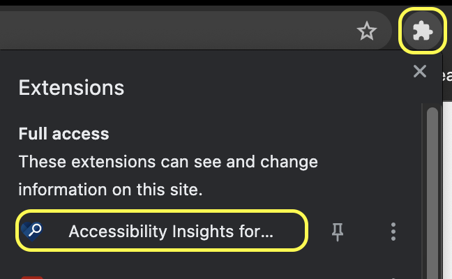
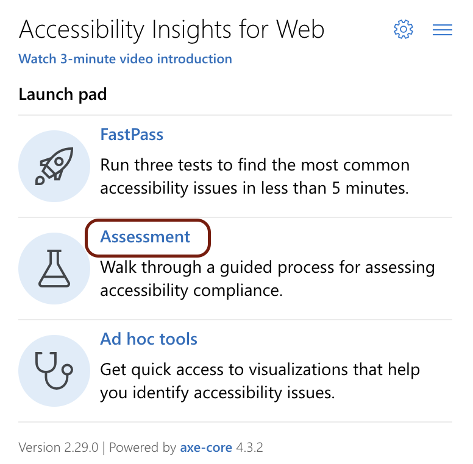

Open Accessibility Insights for Web from the
Extensions popup button in the toolbar item palette
of the browser. 
In the popup that appears, choose Assessment from the
Launch pad. 
This will open a new window that will serve as the main interface for
the extension. From that window, perform the following tests on
the Structuring Things bad example page. Exclude the
contents of the iframes containing the YouTube videos from
your analysis.
Upload this HTML report as the submission for this assignment.
If there are instances where you are not sure about whether
something should pass a test or not, indicate that in the
Comment field for this assignment.